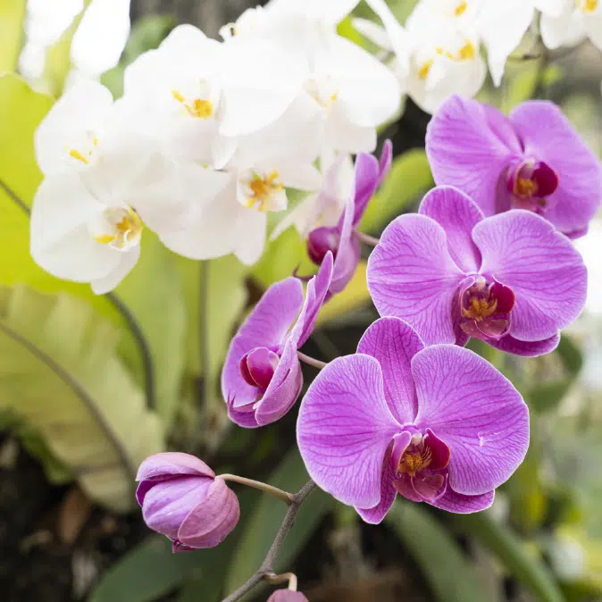

L'Orchidée
L'élégance à l'état pur
L'histoire de l'Orchidée
L'orchidée, symbole de raffinement et de grâce, fascine depuis des siècles par ses formes extraordinaires et sa diversité incomparable.
Origine
Tropiques
Floraison
Variable selon les espèces
Symbolique
Élégance, Raffinement
Caractéristiques
Parfum
Délicat et exotique, variant selon les espèces
Couleurs
Blanc, rose, violet, jaune et motifs uniques
Entretien
Humidité contrôlée, lumière indirecte, chaleur modérée